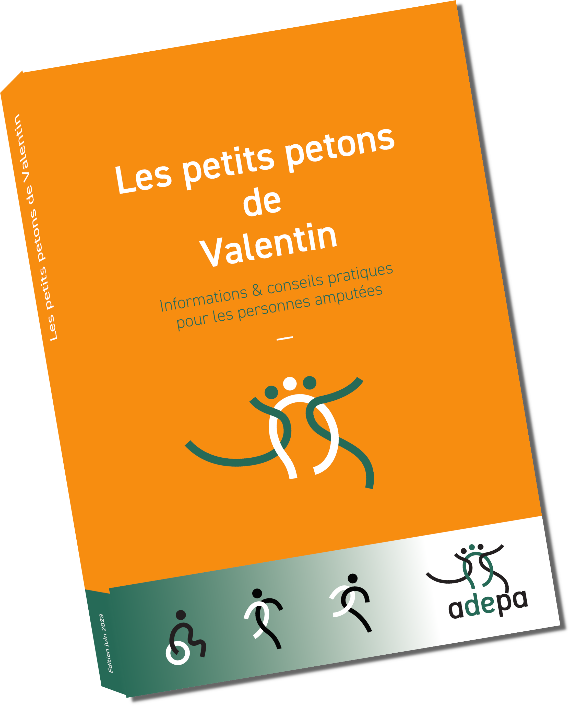
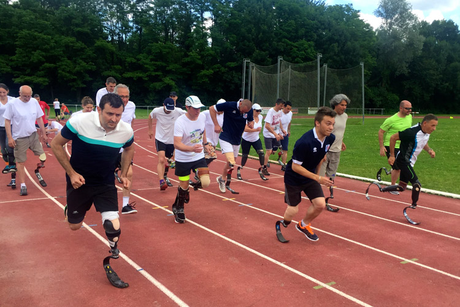

Lors de nos interventions dans les établissements de soins (hôpitaux, cliniques, etc.) et dans les centres de rééducation fonctionnelle avec lesquels l’ADEPA a passé une convention : permanences, réunions auprès de patients ou échanges individuels
Entraide
L’entraide est un axe essentiel et la raison première de notre association.
Elle est orientée vers les personnes amputées et leurs proches, afin de répondre aux différentes questions qu’ils se posent.
Cette aide est apportée par nos contacts régionaux et se pratique :
Directement en faisant appel au contact ADEPA de votre région (par mail ou téléphone)
Directement sur la ligne téléphonique de l’ADEPA au 07 70 00 28 55
En écrivant à l’adresse mail de l’ADEPA contact@adepa.fr
Par l’intermédiaire de notre forum libre d’accès (modération par deux membres d’ADEPA qui veillent à la bonne “tenue” des débats et à la validité des réponses) : https://adepa.forumactif.com/

Communication
Notre communication accompagne et fait connaître nos actions d’entraide, de défense des droits et de recherches et études :
- La publication semestrielle “La Lettre de Valentin” destinée aux adhérents relate entre autres les actualités de l’association.
- Le magazine semestriel, ADEPA-MAG est un outil d’information pour personnes amputées, pour leurs familles et les professionnels. Le MAG est né en juillet 2011. Il est adressé aux adhérents qui le reçoivent à domicile. Il est aussi distribué dans la France entière dans les établissements de soins et chez les prothésistes qui en font la demande.
- Le guide “Les petits petons de Valentin” est publié par l’ADEPA. Riche d’informations et de conseils pratiques pour les personnes amputées et leur entourage, ce guide est envoyé à chaque nouvel adhérent et il est disponible dans la boutique sur commande. Il est régulièrement mis à jour.
- Les affiches et flyers d’informations sur l’association sont disponibles sur demande.
- Les outils internet : ADEPA dispose d’un site internet fournissant les informations dont vous avez besoin. De nombreuses vidéos concernant l’amputation y sont disponibles.
- Le forum vous permet d’échanger, de poser des questions, et de répondre aux questions posées dans un objectif d’entraide (https://adepa.forumactif.com/).
- Il existe aussi une page Facebook pour ceux qui préfèrent ce mode d’information.
Études et défense des droits
Nous participons aux évolutions des technologies et des pratiques pour une meilleure prise en charge de l’amputation.
À ce titre, l’ADEPA contribue régulièrement à faire progresser les sciences et les techniques, en partenariat avec des prothésistes, des scientifiques et des services de recherche universitaire.
Nous voulons aussi continuer à mener des actions d’alerte auprès de nos ministères lorsque les droits des personnes amputées risquent d’être oubliés.
Nous sommes organisés pour un premier soutien juridique et pour vous orienter vers les professionnels qui défendront vos droits.
L’ADEPA est une association agréée au niveau national afin que certains de nos adhérents puissent être Représentants des Usagers (RU) au sein des Commissions Des Usagers (CDU) et des conseils de surveillance dans les établissements de soins. D’autres mandats peuvent être proposés.
Depuis 2022, ADEPA est adhérente de France Assos Santé.
Activités de loisirs
Chaque année ADEPA organise des activités de loisirs, essentiellement en extérieur.
Il peut s’agir d’activités sportives comme :
- Le ski alpin et le snowboard (hiver, printemps),
- La motoneige (hiver),
- L’initiation à la course avec prothèse (printemps, été),
- Le parapente (printemps),
- Le canyoning (été),
- L’accrobranche (automne).
En organisant ces activités, nous souhaitons vous aider à reprendre confiance, à retrouver des activités sociales, à vous sentir capable d’exploits en découvrant un sport que vous n’aviez jamais pratiqué auparavant ou pour reprendre un sport que vous pratiquiez avant votre amputation…
Nous organisons d’autres rencontres moins sportives : activités culturelles, marches, découvertes, soirées au restaurant ou voyages.
Le calendrier des activités est disponible dans nos publications (Lettre de Valentin ou MAG) et sur le calendrier en ligne des actions ADEPA.
